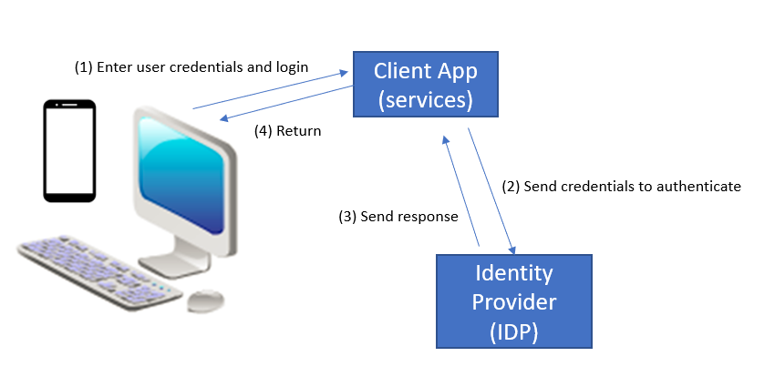
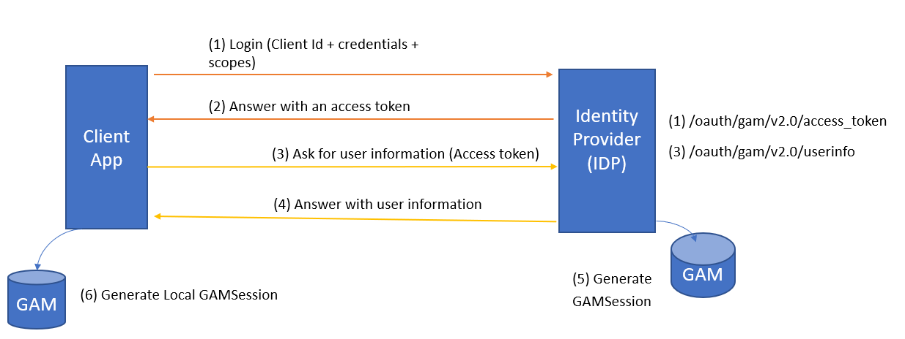

The GAM Remote Rest authentication type allows an application using GAM to use another GAM as an Identity Provider. The user will log in to the application using credentials that are stored in an Identity Provider (IDP).
So, there is a client application (Web or SD, with its own GAM) and an Identity Provider (using GAM) where the user will be authenticated.
In general, this solution is used in a trusted environment, because the user's credentials are entered at the client and flow through that application.
The following is a very simplified schema about this solution (implementation details are shown below).

It's very similar to GAM - GAMRemote Authentication Type (as it uses Oauth 2.0), but in this case the login is done using Rest. So there is no redirection to the Identity Provider's login as in the SSO scenario.
As explained above, in general it will be used in a trusted environment, for credentials are entered at the client.
After the login, a GAMSession is generated at the Identity Provider's GAM and at the client's (the same as with GAM Remote Authentication). The GAMSession has the local token and the external token, to be used for calling any Rest service (depending on whether the service is hosted at the client or at the server).
So, if you need to consume a Rest service using GAM from an application that uses GAM as well, you may authenticate to the provider application using GAM Remote Rest authentication type to get a valid token, instead of using HTTP calls.
The following is an architecture schema (though it does not fully show its complexity, it's useful for understanding what happens under the hoods).

When the user logs in, instead of redirecting to the Identity Provider, the client makes a call to ask for a valid token, using the following URL:
$ServerURL/oauth/gam/v2.0/access_token
The information of the user is requested at this URL
$ServerURL/oauth/gam/v2.0/userinfo
Calling a rest service running at the client's KB.
First, you log in using GAM Remote Rest.
&AdditionalParameter.AuthenticationTypeName = !"gamremoterest" //&AdditionalParameter is of GAMLoginAdditionalParameters data type &LoginOK = GAMRepository.Login(&user, &password, &AdditionalParameter, &GAMErrors)
Then, at any time you can get the Token from the GAMSession to call the Rest service.
&AccessToken = GAMSession.GetToken() //Here call Rest Service using the Authorization headers. &httpclient.AddHeader(!"Authorization",!"OAuth " + &AccessToken) &httpclient.AddHeader(!"GeneXus-Agent",!"SmartDevice Application") &httpclient.Execute(&method,&getstring) //E.g: &httpclient.Execute(!"GET",!"http://server/baseurl/rest/GetCustomers")
The GAMSession.GetToken() method returns the local Token (useful for calling a service of the client KB). Note that for this token, applicable security policies are the web (not Oauth, so the time out expiration of this token is the Web session timeout).
If you want to call a service of the server KB, you must get the external token (to be passed in the authorization headers) using the following:
&GAMSession = GAMSession.Get(&GAMErrors) &AccessToken = &GAMSession.ExternalToken
Take a look at GAM Login Method.
See Server side configuration for GAM Remote Rest Authentication type
See Client side configuration for GAM Remote Rest Authentication type
As from GeneXus 16 upgrade 7
Single Sign on for Rest Services using GAM